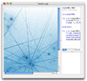

Home

Welcome to NodeBox
NodeBox is a Mac OS X application that lets you create 2D visuals (static, animated or interactive) using Python programming code and export them as a PDF or a QuickTime movie. NodeBox is free and well-documented.
|  | Download NodeBox for Mac OS X (version 1.9.5) Mac OS X Lion (10.7) and Recent updates:
|
News
- NodeBox Workshops: view the results of current and past NodeBox workshops.
- Studying at the Experimental Media Research Group: graduate students with an interest in computer graphics are welcome to come and stay with the NodeBox development team for a while.
- Perception: a web application for NodeBox to play with. It allows concepts to be related to each other in a semantic network of common sense.
- Vampyr!: contemporary music + live performance with a NodeBox installation.
Current projects
NB3 NodeBox 3: NodeBox 3 is cross-platform and has a node-based GUI. The foundation for NodeBox 3 was laid during the Gravital research project. Development is in full swing.
NOGL NodeBox for OpenGL: cross-platform version developed for rendering fast animation of images. It is used as the game engine for City In A Bottle, a game on evolution by natural selection.
Gallery favorites
 Nanophysical |  Creature |  Perception |  Superfolia |  Evolution |